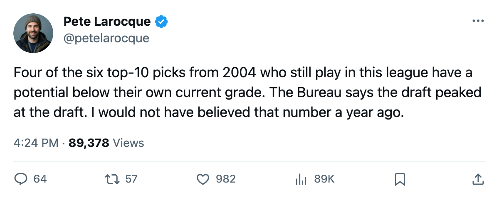
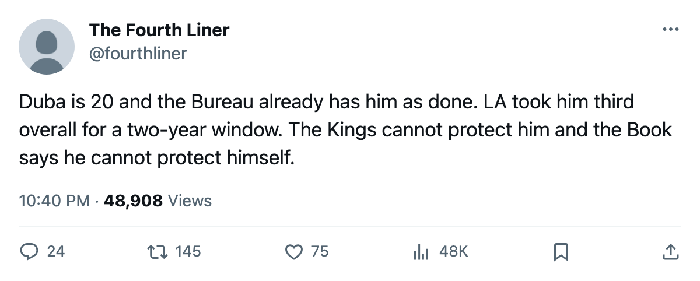

Karel Duba's Speed Is 90. His Potential Is 52. The 2004 Draft's Problem Isn't Just His.
Of the six first-round picks from last June grading 74 or better today, four have a potential below their own overall. The Bureau is telling LA, ANA, DAL and MIN they drafted peak-season players.
 Pete LarocqueScouting editor · The Prospect File
Pete LarocqueScouting editor · The Prospect File
Karel Duba75 has 90 speed, 90 agility, 89 puck control. He is 20 years old. The Bureau's Book prints a 77 overall with a +7 jump on the Development Index, which means the scouts like what they are seeing right now. The figure underneath it, the potential, reads 52. That is 25 points below the number printed on top.
I do not think the 2004 draft is a bad class. I think the Bureau is telling four clubs they drafted men who are already in their prime, and the pick numbers they gave up mean nothing going forward.
The top 10, graded two ways
Six of the first 10 picks from June 2004 are on the league's rosters today with an overall of 74 or higher. I pulled each one's current grade, the Index movement, and the potential figure. Four of those six are below their own overall.
| Pick | Player | Team | Overall | Index | Potential | Gap |
|---|---|---|---|---|---|---|
| 1 | Vaclav Spacek80 |  Toronto Maple Leafs Toronto Maple Leafs | 80 | +6 | 91 | +11 |
| 2 | Kristian Timander76 |  Dallas Stars Dallas Stars | 76 | +3 | 66 | -10 |
| 3 | Karel Duba |  Los Angeles Kings Los Angeles Kings | 77 | +7 | 52 | -25 |
| 7 | Marcel Janota79 |  Carolina Hurricanes Carolina Hurricanes | 75 | +3 | 89 | +14 |
| 9 | Tuomo Pihlman76 |  Minnesota Wild Minnesota Wild | 76 | +4 | 56 | -20 |
| 10 | Tuomas Lydman77 |  Mighty Ducks of Anaheim Mighty Ducks of Anaheim | 77 | +3 | 52 | -25 |
The gap column is overall minus potential. A positive number means the Bureau still sees growth. A negative one means the Book's current grade sits above the projection. That is the Bureau saying: this man's best season is behind him or happening now, and the number you are reading will get worse.
What the 52 means at LA
Dubas's attribute grades from the Book tell you why the potential is low. Speed 90. Agility 90. Puck control 89. Shot power 89. Balance 87. Acceleration 85. He is one of the most athletic 20-year-olds in the league on the offensive attributes.
Then: toughness 50. Penalty killing 51. Fighting 52. The Bureau reads a man who cannot absorb contact, cannot win the board battle, cannot survive a playoff series where a defenceman decides to put him through the boards in Game 5. A body problem the scouts can see at 20 and figure is not going to fix itself.
His line this season: 7 goals, 6 assists, 13 points in 25 games at 19.3 minutes a night. The contract pays $1.03M with 2 years left. Los Angeles Kings has the 5th-worst record in the league at 5-12-6. They drafted a 20-year-old with elite hands and a 50 toughness and put him on a club that cannot protect him.
Lydman is the same man in a different building
Tuomas Lydman at Mighty Ducks of Anaheim carries the same 52 potential. Same current overall at 77. Same pattern: productive now (17 points in 28 games at 22.7 minutes), projected to decline. The difference is that Lydman is 21 and was the 10th pick. LA took a 20-year-old third overall and got the same ceiling number. The Kings had a choice between two 52-potential players at picks 3 and 10 and the draft board said they were close enough to flip a coin.
Kristian Timander in Dallas is the least alarming case. His potential of 66 is 10 below his 76 overall, which is a gap, but a manageable one. He has 10 points in 29 games. He is 21. The Stars took a chance at second overall and the ceiling is lower than the pick suggested, but the floor is not a cliff.
Spacek and the exception that proves the rule
Vaclav Spacek is the first overall pick and the only man in this group whose potential (91) is above his overall (80). He has played 6 games. Three points in 5.8 minutes a night. The Bureau looks at that tiny sample and says: yes, this one gets better. The 2004 draft produced one man the scouts think is still developing among its top six active picks. Five of six are finished products at 20 or 21.
Duba scores, Pihlman won the Calder, Lydman puts up points. The problem is that the draft's top 10 was a present-tense class, and the clubs drafting in June 2004 were paying for a season or two, not a window.
What this says for June
The 2006 class, as I wrote on November 27, has a different shape. Its best player on current grades, Viktor Latypov, carries a 78 potential and the Bureau says that is where he peaks. His lowest attribute is 72. The Bureau sees a solid professional who will not become a star.
But the gap between his 78 potential and his current production is the problem I keep flagging. At least with the 2004 class, the gap ran the other direction: these men played better than their projection. With 2006, the projection is modest and the production might not even reach it.
The 2004 clubs can at least say they got what they drafted. The 2006 clubs are betting on a floor they cannot see.

